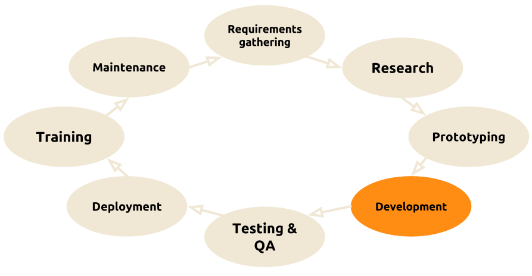

Pragmatic optimization
in modern programming
Ordering optimization approaches
Created by Marina Kolpakova for UNN
Outline
- What is optimization?
- Pragmatic approach
- Place of optimization in a project life cycle
- Ordering optimization techniques
- Overview of optimization steps
How to learn optimization?
Optimization is a craft more than a science. Thereupon,
- Practice more
- do not make practical knowledge too theoretical.
- Look, what other people do
- do find real use-cases of different optimization approaches and techniques.
- Dig into an architecture
- hardware evolves very fast hence today's devices are becoming obsolete very quickly. Comprehensive knowledge helps to see beforehand.
Recommended literature

Computer Architecture, Fifth Edition: A Quantitative Approach
by
John L. Hennessy
and
David A. Patterson.
Recommended literature

Recommended literature

Is Parallel Programming Hard, And, If So, What Can You Do About It?
by
Paul E. McKenney
What is optimization?
In computing, optimization is the process of modifying a system to make some aspect of it work more efficiently or use fewer resources.
In particular, this is a process of transforming a piece of code to make it more efficient without changing its output.
Metrics which are commonly considered:
- Wall(-clock) time
- is a human perception of the passage of time from the start to the completion of a task.
- Power consumption
- is the electrical energy over time which is supplied to complete a task.
- processor time
- is the total execution time (or runtime) for which a processor was dedicated to a task (i.e. used for processing instructions of that task).
Pragmatic approach
“Programmers waste enormous amounts of time thinking about, or worrying about, the speed of non-critical parts of their programs, and these attempts at efficiency actually have a strong negative impact when debugging and maintenance are considered. We should forget about small efficiencies, say about 97% of the time; premature optimization is the root of all evil. Yet we should not pass up our opportunities in that critical 3%.“
-Donald Knuth, Structured Programming With go to Statements
- You ought to find what to start with (3%)
- You ought to know where to stop (97%)
Knowledge which is required
- The code
- The problem, it solves
- The algorithm, it implements
- The algorithmic complexity
- The compiler
- Compilation trajectory
- Compiler's capabilities and obstacles
- The platform
- Architecture capabilities
- Instruction
Sset
Architecture
- Micro-architecture specifics
- Architecture capabilities
Project life cycle
Project life cycle
Optimization cycle

From whence get performance?
- Algorithm
- Compilers are not aware about semantics of your code,
at this rate focus on algorithmic aspect first.
- Decrease big-O complexity
- Use optimized libraries for sub-routines
- Restructure the code
- Split problem on sub-tasks
- Parallelize
From whence get performance?
- Memory access patterns & operations
-
Compilers are quite good in local optimization such as
- transforming loop bodies,
- in-lining local functions,
- simplifying arithmetic expressions
so help a compiler rather than try to outfox it.
Work cohesively with it on
- enabling auto-vectorization,
- optimizing critical loops,
- vectorizing.
From whence get performance?
- HW specific optimizations
-
- Utilize unique properties of the hardware
Modern hardware is quite advanced,
- deep pipelines,
- out-of-order execution,
- sophisticated branch prediction,
- multi-level memory hierarchies,
- processor specialization.
so peephole optimizations are not as important as it used to be 10 years ago.
From whence get performance?
| High-level | Programmer |
| Middle-level | Compiler |
| Low-level | Hardware |
Top-Down (High-low) approach
- Use appropriate algorithms
- Optimize memory access patterns
- Minimize number of operations
- Shrink a critical path
- Perform HW specific optimizations
- Dive into assembly
Optimization tread-offs
- Code portability decreases when we go deeper
- Performance portability decreases when we go deeper
- The cost of maintenance & extendability increases when we go deeper
- Optimizations are often not reusable
- Optimizations become obsolete very quickly
...but still performance is a crucial requirement for most applications.
step #1: Understand the code
- Different people think differently
- you'll need a time to get used to the code
- Understand dataflow
- input parameters
- output results
- data dependencies
- Identify performance limiters
- Time
- Profile
- Grub metrics
- eg power consumption
Step #2: use appropriate algorithm
Consider:
- Big O complexity

- Use of data structures
- Use of already optimized libraries
- Opportunities for scalarization & parallelization
Step #2: use appropriate algorithm
You need to sort 100 Mb of numerical data...
What sorting algorithm would you choose?
Step #3: optimize memory access patterns
- You'll be surprised how many algorithms are memory bound
- It is crucial to load only data that is really needed for computations
Optimization for a memory usually involves:
- Data restructuring
-
- to use only needed bytes
- to walk through data in more efficient way,
- Data packaging
- to shrink data in size
- Loop transformations
-
- to walk through data in more efficient way,
- to increase temporal & spacial locality,
- to perform cache-aware optimizations
Step #3: optimize memory access patterns
|
|
Which is more optimal for conventional CPU processor?
Step #3: optimize memory access patterns
|
|
Step #4: minimize number of operations
Reducing a program in the number of operations
does not necessarily decrease its running time,
but it is a good heuristic, though.
A Compiler is good in local optimizations, so it usually helps a lot here:
Machine-independent optimizations
|
Machine-dependent optimizations
|
Step #4: minimize number of operations

uint32_t gray2rgba_v1(uint8_t c)
{
return c + (c<<8) + (c<<16) + (c<<24);
}
uint32_t gray2rgba_v2(uint8_t c)
{
return c * 0x01010101;
}
Are they same?
Step #4: minimize number of operations
gray2rgba_v1:
.LFB0:
.cfi_startproc
movzbl %dil, %eax
imull $16843009, %eax, %eax
ret
.cfi_endproc
gray2rgba_v2:
.LFB2:
.cfi_startproc
movzbl %dil, %eax
imull $16843009, %eax, %eax
ret
.cfi_endproc
Are they same?
gcc -O2 -S 1.c -o 1.s ; cat 1.s
Step #4: minimize number of operations
Unfortunately, sometimes a compiler fails some optimization steps
and harms the performance by
introducing redundant operations.
More often failed steps are:
- Register allocation
- Scalarization
Starting from this optimization step it is worth to look at the assembly code to check whether the compiler is actually automating a particular optimization.
Step #5: shrink the critical path
- Critical path
- is the longest sequence of operations in a code block which must be completed in order. It is caused by dependencies between operations.
for (int col = 0; col < cols; ++col)
{
dptr[col] = (sptr0[col*2] + sptr0[col*2+1] + sptr1[col*2] + sptr1[col*2+1] + 2) >> 2;
}
What is the critical path of this code line?
Step #6: perform HW specific optimizations
Require comprehensive understanding of target HW,
that are usually beyond of compiler abilities
- Using instructions, which are specific for concrete hardware
- Using special hardware capabilities
- Overcoming micro-architecture weakness
Step #7: dive into assembly
Assembler is very often used to check the compiler
and rarely used to write low-level code.
Raw assembly make sense to:
- Overcome compiler bugs & optimization limitations
- addition of redundant instructions
- suboptimal register allocation
- Use specific hardware features
- which are not expressed in higher level ISA
Keep in mind that:
- Hand-written assembly is the least portable optimization
- In-line assembly insertions limit compiler abilities for further optimizations
THE END